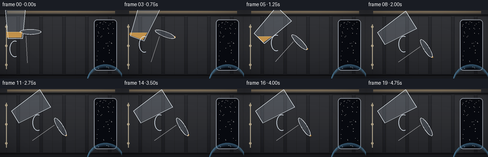
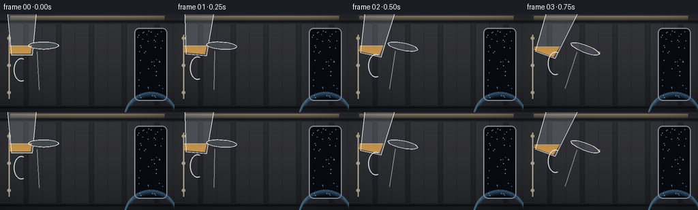

CODING AGENTS AS PIXEL WORLD MODELS
traex/Seed-2.1-Pro-0915 · phygen_002
点击播放 · 原生 RGB 像素
逐轮保存的候选
回放视频、检查图与代码变化。
每份候选均可单独播放。实际图片检查记录在下方工具轨迹中。
候选 01播放与检查图
点击播放 · 原生 RGB 像素


展开代码变化
--- 上一保存版本
+++ 本次保存版本
@@ -0,0 +1,313 @@
+"""Text-to-video: oil poured from a cup inside a space station (microgravity).
+
+Pure numpy/PIL renderer. A glass cup tilts and releases amber oil; in zero
+gravity the liquid pinches into droplets that drift, oscillate and coalesce
+into spheres. Rendered at 2x supersampling, then downscaled to 256x144.
+"""
+import math
+from pathlib import Path
+
+import numpy as np
+from PIL import Image, ImageDraw
+
+import artifact_io
+
+CASE_DIR = Path(__file__).parent
+W, H, N, FPS = 256, 144, 20, 4.0
+SS = 2
+SW, SH = W * SS, H * SS
+
+rng = np.random.default_rng(20261110)
+
+OIL = np.array([202, 138, 41], dtype=float) # amber oil
+OIL_DARK = np.array([120, 74, 18], dtype=float)
+LIGHT = np.array([-0.42, -0.55, 0.72])
+LIGHT = LIGHT / np.linalg.norm(LIGHT)
+
+
+# ---------------------------------------------------------------- background
+def make_background():
+ """Warm-gray station cabin with a star window and soft top lighting."""
+ yy = np.linspace(0, 1, SH, dtype=float)[:, None]
+ top = np.array([46, 47, 51], float)
+ bot = np.array([26, 27, 31], float)
+ img = top[None, None] * (1 - yy[..., None]) + bot[None, None] * yy[..., None]
+ img = np.repeat(img, SW, axis=1)
+
+ pil = Image.fromarray(img.astype(np.uint8))
+ d = ImageDraw.Draw(pil, "RGBA")
+
+ # Wall panels with thin seams.
+ for x in range(-20, SW, 96):
+ d.rectangle([x + 6, 26, x + 90, SH - 18], fill=(255, 255, 255, 10),
+ outline=(0, 0, 0, 90), width=2)
+ d.line([x + 48, 26, x + 48, SH - 18], fill=(0, 0, 0, 70), width=1)
+ d.rectangle([0, 18, SW, 24], fill=(0, 0, 0, 120))
+ d.rectangle([0, SH - 16, SW, SH - 12], fill=(0, 0, 0, 120))
+
+ # Warm overhead light strip.
+ for k in range(14):
+ a = int(70 * (1 - k / 14))
+ d.rectangle([30, 4 + k, SW - 30, 5 + k], fill=(255, 214, 150, a))
+
+ # Star window on the right.
+ wx0, wy0, wx1, wy1 = SW - 118, 40, SW - 22, SH - 34
+ d.rounded_rectangle([wx0, wy0, wx1, wy1], radius=14,
+ fill=(8, 10, 16), outline=(150, 156, 166), width=3)
+ stars = rng.random((46, 2))
+ for sx, sy in stars:
+ px = wx0 + 8 + sx * (wx1 - wx0 - 16)
+ py = wy0 + 8 + sy * (wy1 - wy0 - 16)
+ b = int(120 + 120 * rng.random())
+ d.ellipse([px - 1, py - 1, px + 1, py + 1], fill=(b, b, b, 255))
+ # Faint Earth limb at the bottom of the window.
+ for k in range(16):
+ a = int(90 * (1 - k / 16))
+ d.arc([wx0 - 30, wy1 - 26 + k, wx1 + 30, wy1 + 120 + k],
+ 190, 350, fill=(90, 150, 190, a), width=2)
+
+ # Handrail on the left wall.
+ d.line([26, 60, 26, SH - 40], fill=(214, 200, 170, 200), width=4)
+ for ry in (70, 150, 230):
+ d.ellipse([21, ry - 5, 31, ry + 5], fill=(180, 166, 138, 255))
+
+ img = np.asarray(pil).astype(float)
+
+ # Vignette.
+ cx, cy = SW / 2, SH / 2
+ gy, gx = np.mgrid[0:SH, 0:SW]
+ r = np.sqrt(((gx - cx) / cx) ** 2 + ((gy - cy) / cy) ** 2)
+ img *= (1 - 0.35 * np.clip(r - 0.55, 0, 1) ** 2)[..., None]
+ return np.clip(img, 0, 255)
+
+
+# ------------------------------------------------------------------- helpers
+def rot(px, py, angle):
+ """Rotate local point (y-down coords), clockwise positive."""
+ c, s = math.cos(angle), math.sin(angle)
+ return px * c - py * s, px * s + py * c
+
+
+def alpha_blend(buf, fg, mask):
+ a = (mask.astype(float) / 255.0)[..., None]
+ buf[:] = buf * (1 - a) + fg * a
+
+
+def draw_sphere(buf, x, y, rx, ry, alpha=0.93, tint=OIL):
+ """Draw a shaded liquid sphere/ellipse (256-scale coordinates)."""
+ rx, ry = max(rx * SS, 1.2), max(ry * SS, 1.2)
+ x, y = x * SS, y * SS
+ r = max(rx, ry) + 3
+ x0, x1 = int(x - r), int(x + r) + 1
+ y0, y1 = int(y - r), int(y + r) + 1
+ if x1 <= 0 or y1 <= 0 or x0 >= SW or y0 >= SH:
+ return
+ gx, gy = np.mgrid[max(y0, 0):min(y1, SH), max(x0, 0):min(x1, SW)]
+ nx_ = (gx + 0.5 - x) / rx
+ ny_ = (gy + 0.5 - y) / ry
+ d2 = nx_ ** 2 + ny_ ** 2
+ inside = d2 <= 1.0
+ if not inside.any():
+ return
+ nz = np.sqrt(np.clip(1 - d2, 0, 1))
+ norm = np.sqrt(nx_ ** 2 + ny_ ** 2 + nz ** 2)[..., None]
+ n = np.stack([nx_, ny_, nz], -1) / norm
+ diff = np.clip((n * LIGHT).sum(-1), 0, 1)
+ half = LIGHT + np.array([0.0, 0.0, 1.0])
+ half = half / np.linalg.norm(half)
+ spec = np.clip((n * half).sum(-1), 0, 1) ** 28
+ base = tint[None, None] * (0.40 + 0.62 * diff[..., None])
+ base += 255 * spec[..., None] * 0.85
+ # Darkened rim and a small bright transmission spot.
+ rim = np.clip((np.sqrt(d2) - 0.78) / 0.22, 0, 1)
+ base = base * (1 - rim[..., None] * 0.55) + OIL_DARK * (rim[..., None] * 0.55)
+ spot = np.maximum(0, 1 - (((nx_ + 0.42) / 0.30) ** 2 + ((ny_ + 0.46) / 0.34) ** 2))
+ base += 255 * spot[..., None] * 0.55
+
+ aa = np.clip((1.02 - np.sqrt(d2)) * 6, 0, 1) * alpha
+ sy = slice(max(y0, 0), min(y1, SH))
+ sx = slice(max(x0, 0), min(x1, SW))
+ sub = buf[sy, sx]
+ a = aa[..., None]
+ buf[sy, sx] = sub * (1 - a) + np.clip(base, 0, 255) * a
+
+
+# ---------------------------------------------------------------------- cup
+class Cup:
+ def __init__(self):
+ self.px, self.py = 64.0, 120.0 # pivot (bottom center), 256 scale
+ self.h = 74.0
+ self.wb, self.wt = 15.0, 22.0 # half widths bottom / top
+
+ def pose(self, angle):
+ self.angle = angle
+ self.lip = self.to_world(self.wt, -self.h)
+ axis = rot(0, -1, angle)
+ self.axis = np.array(axis)
+ self.outward = np.array(rot(1, 0, angle))
+
+ def to_world(self, lx, ly):
+ rx, ry = rot(lx, ly, self.angle)
+ return self.px + rx, self.py + ry
+
+ def body_polygon(self):
+ pts = [(-self.wb, 0), (-self.wt, -self.h), (self.wt, -self.h), (self.wb, 0)]
+ return [(self.px + rot(x, y, self.angle)[0] * SS,
+ self.py + rot(x, y, self.angle)[1] * SS) for x, y in pts]
+
+ def draw(self, buf, oil_level_y):
+ layer = Image.new("RGBA", (SW, SH), (0, 0, 0, 0))
+ d = ImageDraw.Draw(layer)
+ poly = self.body_polygon()
+
+ # Interior silhouette mask for the oil.
+ inner = [(x - 2.5 * SS, y - 2.5 * SS) if i in (0, 3) else
+ (x + 2.5 * SS * (1 if i == 2 else -1), y + 2.5 * SS)
+ for i, (x, y) in enumerate(poly)]
+ mask = Image.new("L", (SW, SH), 0)
+ ImageDraw.Draw(mask).polygon([(x, y) for x, y in inner], fill=255)
+ m = np.asarray(mask)
+ gy = np.mgrid[0:SH, 0:SW][0]
+ oil_mask = (m > 0) & (gy >= oil_level_y * SS)
+ if oil_mask.any():
+ grad = np.clip((gy - oil_level_y * SS) / 60.0, 0, 1)
+ oil_fill = (OIL * (0.75 + 0.35 * grad[..., None]) +
+ OIL_DARK * (1 - grad[..., None]) * 0.4)
+ # Bright meniscus line at the free surface.
+ men = oil_mask & (np.abs(gy - oil_level_y * SS) <= 1.4)
+ oil_fill[men] = oil_fill[men] * 0.4 + np.array([255, 214, 120]) * 0.6
+ alpha_blend(buf, np.clip(oil_fill, 0, 255), oil_mask * 235)
+
+ # Glass body: faint fill, bright rim, base.
+ d.polygon(poly, fill=(205, 220, 235, 46), outline=(225, 235, 245, 210))
+ d.line(poly + [poly[0]], fill=(235, 244, 250, 235), width=2, joint="curve")
+ # Rim ellipse (opening), projected under tilt.
+ rx, ry = self.wt, 5.5
+ rim_pts = []
+ for k in range(40):
+ a = 2 * math.pi * k / 40
+ rim_pts.append(self.to_world(rx * math.cos(a), -self.h + ry * math.sin(a)))
+ d.polygon([(x * SS, y * SS) for x, y in rim_pts],
+ outline=(240, 248, 255, 235), fill=(180, 200, 220, 40))
+ d.line([(x * SS, y * SS) for x, y in rim_pts] +
+ [(rim_pts[0][0] * SS, rim_pts[0][1] * SS)],
+ fill=(245, 250, 255, 245), width=2)
+ # Handle on the uphill side.
+ hc = self.to_world(-self.wt - 11, -self.h * 0.52)
+ box = [hc[0] * SS - 11 * SS, hc[1] * SS - 17 * SS,
+ hc[0] * SS + 11 * SS, hc[1] * SS + 17 * SS]
+ d.arc(box, start=70, end=290, fill=(225, 235, 245, 225), width=3 * SS // 2)
+ # Specular streak on the glass.
+ s0 = self.to_world(-self.wt * 0.45, -self.h * 0.88)
+ s1 = self.to_world(-self.wb * 0.45, -self.h * 0.12)
+ d.line([s0[0] * SS, s0[1] * SS, s1[0] * SS, s1[1] * SS],
+ fill=(255, 255, 255, 130), width=2)
+
+ buf[:] = np.asarray(Image.alpha_composite(
+ Image.fromarray(buf.astype(np.uint8)).convert("RGBA"), layer
+ ).convert("RGB")).astype(float)
+
+
+# ---------------------------------------------------------------- simulation
+def main():
+ background = make_background()
+ cup = Cup()
+ droplets = [] # dicts: x, y, vx, vy, r, age, phase
+
+ frames = []
+ for t in range(N):
+ buf = background.copy()
+
+ # Tilt schedule: upright, lean over, hold the pour.
+ if t <= 1:
+ angle = math.radians(4 * t)
+ else:
+ p = min((t - 1) / 6.0, 1.0)
+ p = p * p * (3 - 2 * p)
+ angle = math.radians(8 + 50 * p)
+ cup.pose(angle)
+
+ lip_x, lip_y = cup.lip
+ pouring = 3 <= t <= 16
+
+ # Oil free surface stays horizontal in the world frame.
+ lip_start_y = 120 - 74 # upright lip height
+ target_y = lip_y # while pouring, surface sits at lip
+ level = lip_start_y + (target_y - lip_start_y) * min(max((t - 2) / 12.0, 0), 1)
+ level = min(level, lip_y + 0.5)
+
+ # Emit liquid from the lip: chain of beads that pinch off.
+ if pouring:
+ n_emit = 2 if t < 14 else 1
+ for k in range(n_emit):
+ speed = 5.4 + rng.normal(0, 0.5)
+ d_ang = angle + math.radians(rng.normal(8, 7))
+ vx = math.sin(d_ang) * speed + cup.outward[0] * 1.2
+ vy = -math.cos(d_ang) * speed + cup.outward[1] * 1.2
+ r = 2.1 + rng.random() * 1.3
+ droplets.append({
+ "x": lip_x + cup.axis[0] * (3 + k * 2) + rng.normal(0, 0.6),
+ "y": lip_y + cup.axis[1] * (3 + k * 2) + rng.normal(0, 0.6),
+ "vx": vx, "vy": vy, "r": r,
+ "age": 0.0, "phase": rng.random() * 6.28,
+ })
+ # Continuous neck from lip to the freshest bead.
+ young = [d for d in droplets if d["age"] < 1.5]
+ if young:
+ q = min(young, key=lambda z: z["age"])
+ neck = Image.new("RGBA", (SW, SH), (0, 0, 0, 0))
+ nd = ImageDraw.Draw(neck)
+ nd.line([lip_x * SS, lip_y * SS, q["x"] * SS, q["y"] * SS],
+ fill=(*OIL.astype(int), 215), width=max(int(3.2 * SS), 2))
+ buf[:] = np.asarray(Image.alpha_composite(
+ Image.fromarray(buf.astype(np.uint8)).convert("RGBA"), neck
+ ).convert("RGB")).astype(float)
+
+ # Integrate (constant velocity in microgravity) and age droplets.
+ for d in droplets:
+ d["x"] += d["vx"]
+ d["y"] += d["vy"]
+ d["age"] += 1
+ d["phase"] += 0.45
+
+ # Coalescence: volume-conserving mergers on contact.
+ changed = True
+ while changed:
+ changed = False
+ for i in range(len(droplets)):
+ for j in range(i + 1, len(droplets)):
+ a, b = droplets[i], droplets[j]
+ dist = math.hypot(a["x"] - b["x"], a["y"] - b["y"])
+ if dist < 0.82 * (a["r"] + b["r"]):
+ va, vb = a["r"] ** 3, b["r"] ** 3
+ r = (va + vb) ** (1 / 3)
+ m = va + vb
+ a["x"] = (a["x"] * va + b["x"] * vb) / m
+ a["y"] = (a["y"] * va + b["y"] * vb) / m
+ a["vx"] = (a["vx"] * va + b["vx"] * vb) / m
+ a["vy"] = (a["vy"] * va + b["vy"] * vb) / m
+ a["r"] = r
+ a["phase"] = 0.0
+ droplets.pop(j)
+ changed = True
+ break
+ if changed:
+ break
+
+ cup.draw(buf, level)
+
+ # Render droplets with damped capillary oscillation.
+ for d in droplets:
+ q = 0.14 * math.sin(d["phase"]) * math.exp(-d["age"] * 0.12)
+ draw_sphere(buf, d["x"], d["y"], d["r"] * (1 + q), d["r"] * (1 - q))
+
+ frame = Image.fromarray(buf.astype(np.uint8)).resize((W, H), Image.LANCZOS)
+ frames.append(np.asarray(frame, dtype=np.uint8))
+
+ frames = np.stack(frames)
+ artifact_io.save(frames, CASE_DIR)
+ print(f"saved {frames.shape} to {CASE_DIR}")
+
+
+if __name__ == "__main__":
+ main()
可观测工具轨迹
实际执行的命令与返回图片。
命令 1exit 0
/bin/bash -lc 'cat prompt.txt GENERATION_RULES.md task_spec.json 2>/dev/null; ls -la'
命令 2exit 0
/bin/bash -lc 'cat artifact_io.py; python3 -c "import numpy, PIL; print(numpy.__version__, PIL.__version__)"'
命令 3exit 0
/bin/bash -lc 'cd . && time python3 generate.py && ls frames | head && ls -la pixels.npz'
保存候选 1 份；完成命令 3 次；可验证图片返回 0 张。原始 API 响应与完整日志保留在本地。